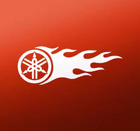
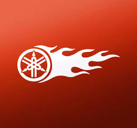
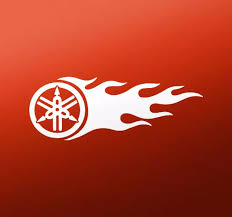
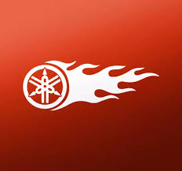

The Yamaha R15 V3 is a 155cc sport bike known for its sporty design,
performance, and advanced features.
features a 155cc liquid-cooled engine with VVA (Variable Valve Actuation)
technology, producing 18.6 PS of power and 14.1 Nm of torque, paired with
a 6-speed manual transmission. Key features include a dual-channel ABS,
all-LED lighting, a digital LCD instrument cluster, and a lightweight 142
kg frame with a 11-liter fuel tank. Performance and engine
Engine: 155cc, liquid-cooled, 4-stroke, SOHC, 4-valve engine
Power: 18.6 PS at 10,000 rpm
Torque: 14.1 Nm at 8,500 rpm
Transmission: 6-speed manual
Technology: Variable Valve Actuation (VVA) for improved performance across
the rev range
Chassis and handling Suspension: Telescopic front fork and a monocross
rear suspension
Braking: Dual-channel ABS
Tyres: Tubeless tyres, with the rear being a radial tubeless tyre
Frame: Deltabox frame
Design and features
Lights: All-LED headlights and tail lights
Instrumentation: All-digital LCD instrument cluster with a welcome screen
and shift light
Weight: 142 kg (kerb weight)
Fuel Tank: 11-liter capacity
Other features: Side stand engine cut-off switch and dual horns
Suitability
The R15 V3 is ideal for riders who want a sporty bike with a focus on
performance and aesthetics.
Its aggressive, track-oriented riding position can be uncomfortable for
daily commuting or long-distance riding.

The Yamaha R15 V4 is a 155cc sport bike with a 18.4 PS liquid-cooled
engine, featuring upside-down front forks,
a digital instrument
cluster with Bluetooth connectivity, dual-channel ABS, and traction
control. It is known for its aggressive styling and is designed for
performance-oriented riding, though the committed riding posture is not
ideal for long-distance touring. Engine and performance
Engine: 155cc, liquid-cooled, 4-stroke, SOHC, 4-valve engine
Horsepower: 18.4 PS @ 10,000 rpm
Torque: 14.2 Nm @ 7,500 rpm
Transmission: 6-speed constant mesh with assist and slipper clutch
Technology: Features Variable Valve Actuation (VVA) for improved
performance across the rev range and a DiASil cylinder for better heat
dissipation. Chassis and handling
Front suspension: Upside-down front forks for enhanced stability and shock
absorption
Rear suspension: Standard for the model
Brakes: Dual-channel ABS with a 282mm front disc and 220mm rear disc
Tyres: 100/80-section front and 140/70-section rear on 17-inch alloy
wheelsv
Handlebars: Wider, clip-on handlebars for better control
Technology and features
Instrument cluster: New LCD display with gear shift indicator, and Track &
Street mode
Bluetooth connectivity: Allows pairing with a smartphone for call/SMS
alerts, fuel consumption tracking, and more via the Yamaha Motorcycle
Connect app Traction control system: Provides assistance on low-traction
surfaces
Quick shifter: Available on certain models (Racing Blue colour & R15M) for
faster upshifts
Fuel tank capacity: 11 liters
Ergonomics and comfort
Riding position: Aggressive, leaned-forward posture
Passenger comfort: The pillion seat is small and high, making it suitable
only for short rides
Mileage: Around 55.20 kmpl (claimed)

The Yamaha RayZR 125 is a 125cc sporty scooter designed for urban riders,
known for its fuel-injected "hybrid" engine, light weight, and fuel
efficiency. It features a 125cc engine with a Smart Motor Generator (SMG)
that provides a power assist for improved mileage and torque, and a Stop &
Start System (SSS) to save fuel. The scooter weighs 99 kg, has a 5.2-liter
fuel tank, and comes in various models with features like a front disc
brake option, Bluetooth connectivity, and a large under-seat storage.
Engine and performance
Engine: 125cc air-cooled, fuel-injected (FI) engine.
Power: 8.2 PS (8.04 bhp) @ 6500 rpm.
Torque: 10.3 Nm @ 5000 rpm.
Hybrid Assist: The Smart Motor Generator (SMG) assists the engine,
improving power and torque.
Stop & Start System (SSS): Automatically shuts off the engine when idle to
save fuel.
You can watch this video for a detailed review of the Yamaha RayZR 125
Fi:
Related video thumbnail
1m
TBC Unfiltered
YouTube • 5 Mar 2020
Design and features
Weight: It is a lightweight scooter at 99 kg, which contributes to its
quick performance and easy handling.
Fuel Tank: 5.2-liter capacity.
Brakes: Available with drum brakes on both front and rear wheels, or a
front disc brake option on some variants, with a combined braking system.
Lighting: Features DRLs (Daytime Running Lights).
Storage: Offers a 21-liter under-seat storage.
Wheels: Comes with tubeless tires and alloy wheels.
Mileage and variants
Mileage: The claimed mileage is 71.33 kmpl, with user-reported mileage
often in the 50-60 kmpl range.
Variants: The scooter is available in various models, including the
standard and the Street Rally edition, which has more rugged styling
elements. Connectivity: Newer models feature a digital console with
Bluetooth connectivity.
vist your page